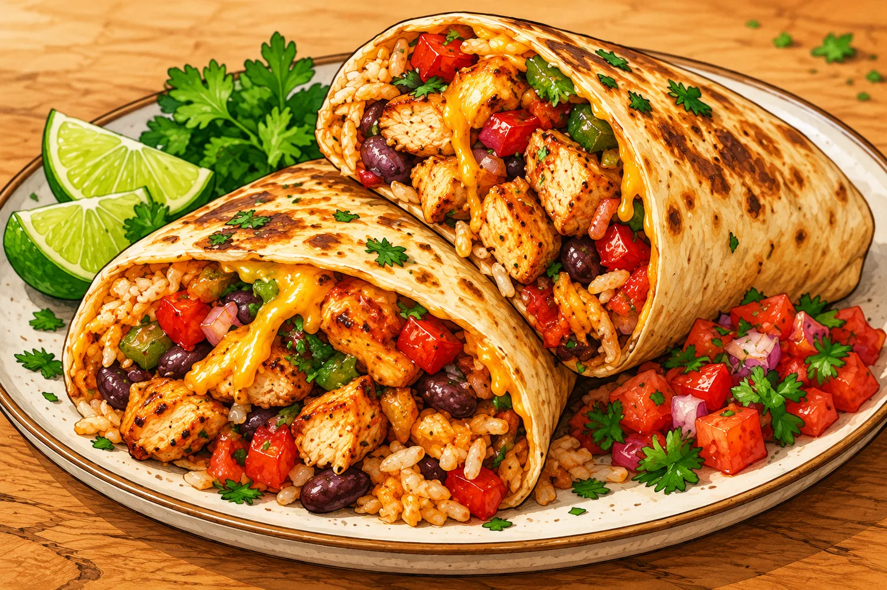

Burrito au poulet
Une grosse portion maison, simple à préparer, avec des légumes et des protéines.
⏱ 25 min🍽 1 grosse portion💰 ≈ 4–5 €💪 ≈ 60 g protéines≈ 850 kcal
Ingrédients
- 200 g de blanc de poulet
- 80 g de riz cru
- 1 grande tortilla (70 g)
- 80 g de haricots rouges cuits
- 80 g de poivron
- 50 g de tomate
- 40 g d’oignon
- 30 g de fromage blanc
- 5 ml d’huile
- Paprika, cumin, sel, poivre
Préparation
- Cuire le riz dans une casserole d’eau selon le paquet.
- Couper poulet, poivron et oignon en petits morceaux. Les saisir dans une poêle huilée 7 à 9 min jusqu’à cuisson complète.
- Ajouter haricots égouttés, tomate en dés, paprika et cumin ; réchauffer 2 min.
- Répartir le riz et la garniture sur la tortilla, ajouter le fromage blanc, puis replier les côtés et rouler serré.
- Dorer le burrito 1 à 2 min par face dans une poêle sèche.
Conservation et réchauffage
Garder la garniture 2 jours au frais ; réchauffer bien chaud et rouler dans une tortilla fraîche.
Nutrition et prix indicatifs : à recalculer selon les marques et quantités dans MyFitnessPal. Les sauces mentionnées sont sans poisson : vérifier les étiquettes.